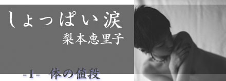

|  | ||
| 「ね、ここって時給いくら？」 ホステスとしてバーで働いていた私に、ミキちゃんは小さな声で聞いてきた。ミキちゃんは店の、そして私の常連客。いつも深夜11時頃やってきて、必ず私を指名し、他のホステスはいらないと言う。 |
||
| 「うーんとね、基本は時給3000円」 私はミキちゃんの耳元でささやいた。他の客ならこんな事教えないけど、ミキちゃんは別。私は裏表のない素直なミキちゃんが大好きだった。 「あー、やっぱりそんなもんだよね」 ミキちゃんはミニスカートから出た両足をバタバタさせた。 「時給3000円だとー、６時間働いて１万8000円。１週間でぇ……」 「私は週2日休みだから、だいたい９万円ね」 まだ指を折って数えているミキちゃん。「そっかあ、１カ月で…。私には無理だなあ」 ぶつぶつとつぶやきながら、私が作った水割りに手を伸ばした。 私は21歳。ミキちゃんは１つ下の20歳。ミキちゃんとの出会いは２カ月前にさかのぼる。まだ外の日差しがきつい９月初めに、黒のノースリーブのワンピースを身にまとって店にやってきた。初めて見た時の印象は、少しも派手じゃないのに何故か目立つ雰囲気で、歳よりは大人っぽい感じだったと思う。ミキちゃんは店中のホステスにサッと目を走らせた後、私を指さした。あとで理由を聞いたら、「一番話しを聞いてくれそう」だから選んだんだそうだ。２日に一度は店に来て、私と１〜２時間おしゃべりして帰る。電話番号もメールアドレスもお互い知っているけれど、店以外で連絡を取り合うことはなかった。 私たち二人がソファに並んで座ると店員同士がおしゃべりしているみたいな雰囲気で、時々他のお客さんが不思議そうな顔でこちらに視線を向けてくる時もあった。ほとんどの客が中年男性というなかで、露出度満点の服からピチピチした肌を出しているミキちゃんは異色の客であることは間違いない。 初めてミキちゃんが来店した日、仕事が終わった後の仲間うちでの話題は、彼女の話で持ちきりだった。 「今日来たあの子、恵里の友達なの？」 私は首をふる。 「じゃあ、何？ 何しに来たの？ 何話してたの？」 その日働いていた５人のホステスの目が一斉に私を見た。 「えーと、シドニーオリンピックの話とか。なんか世間話をしたかったみたいです」 アイさんという二つ年上の先輩が吹き出した。その時、店で人気ＮＯ．１の売上げを誇るかなこさんが言った。 「ねー、あの子、ウリやっているんでしょ？」 再び５人の目が私をとらえる。私がオズオズと首を縦にふると、みんなはなーんだと低く笑った。その顔には興味から失望、そして自分たちよりも“下”の人間なのだという軽蔑が入り交じる。 ウリ＝売春。ミキちゃんは渋谷のＡクラブで、会員制の客を相手に売春をしている子だった。 次にミキちゃんが来た時、私以外のホステスは誰も「いらっしゃいませ」と言わなかった。みんな知らんぷりしてる。それどころかミキちゃんに聞こえるような大声で、「店が汚れるねー」と厭みを言う人もいた。私はミキちゃんに許可なく、みんなに職業を言ってしまったことを後悔した。でもミキちゃんは全然気にならないみたいだ。店に入るなり、私の手を引っ張ってソファへ座る。 私はと言えば、ミキちゃんに対して色眼鏡で見たことは一度もなかった、と思う。むしろ彼女のよく動く目や、足や、そしてミキちゃんの真っ直ぐな言葉にとても惹かれていった。ミキちゃんは法に反する売春をしていることに、罪の意識はおそらくない。彼氏もいるらしいけど、彼に対してもないと言う。話しを聞いている私も、売春なんて辞めなよと言う言葉は出てこない。「売春ってどうしていけないんだろ？」と言うミキちゃんに対して、うなづいてしまうぐらいだ。 だって私もそう思っていた。 「売春ってどうしていけないの？」 1995年頃、私が高校生の時に援助交際という言葉が出てきた。私の周りの子でもバイト感覚でそれをしている人たちがいた。世の中の親や教師やマスコミは、こぞってその言葉を口にし、問題化していったけれど、誰も「何故いけないのか？」を語っていない。私はやってみたいと思うことは何度もあった。だって時給が高いから。でもイマイチ踏ん切れない。相手が知らない人というのが何となく怖い。じゃあ知っている人ならいいのか？ ＹＥＳ。でもそんな年上と知り合う環境なんてない。今はその環境はあるものの、そんな“お誘い”がない。つまり知っている人で、それをしてくれる男性がいなかったからしていないだけ。私にもセックスと売春の境界線なんてないのだ。 その日のミキちゃんは、お金の話しばかり。そして何となく元気がなく、言葉も投げやりなので少し心配になった。 「ここの時給なんか聞いたりして…もしかしてホステスしたいの？」 冗談混じりに私が聞くと、ミキちゃんは首をかしげる。 「っていうかー、他の仕事がしたい」 「そうなの？ いつも『こんなに高い仕事はない』って自慢してたのに」 「そうなんだけどぉ、最近すごくムナしくなる時あるんだー。毎回毎回同じことの繰り返しで、何やってるんだろうって思っちゃう」 いつもうるさいぐらい元気良く話すミキちゃんが、ため息をついた。 「でも私、すごくお金使っちゃうし、やっぱり今ぐらいのお金も欲しいんだよね。だけどそんな仕事なんてない。それに普通の仕事ってなんか面倒な感じだし……」 「そうだねぇ」私もミキちゃんと一緒に腕を組んで考える。 「結局、ミキちゃんにとって何が大事かなんじゃない？ お金なら続けるしかないだろうし、ムナしさをなくしたいなら辞めるしかないし」 私の言葉に、ミキちゃんはうなづく。 「そうだよね。少し考えてみるよ。ありがとう」 そう言って、ミキちゃんはその日店を後にした。 それから５日間、ミキちゃんは店に来なかった。私は彼女が気になりつつも、何となく電話もメールもできない。今のミキちゃんに手を差し伸べたい反面、そうしたら自分も一緒に倒れてしまいそうな危うさを私も抱えていた。ミキちゃんには偉そうなことを言ったものの、私だって同じ。ホステスの仕事が自分に向いてないと気づいて辞めたくても、昼間の仕事だけではお金が足りない。だから心の内にムナしさが沸いてきても、今は我慢するしかないと思っていた。 ミキちゃんと会わなくなって６日目、私は店である事件に襲われた。 その日の夜、私は初めてミキちゃんに電話をした。ミキちゃんにどうしても会いたいと思った。震える声で私が「会いたい」と言うと、ミキちゃんは「すぐに行く」と言って電話を切った。11月中旬、かなり冷え込んだ夜。私は震えるほど寒かった。指定した公園にミキちゃんが駆けつけてくれた時、それまでこらえていた涙があふれ、私はミキちゃんのコートに顔をうずめた。 「どうしたの？」 ミキちゃんは自分より背が高い私をしっかりと受け止めた。 「怖かった……」 私は身体を離して、ミキちゃんの目を見た。その時、ミキちゃんが息をのむのが分かった。理由は分かっている。先程自分の顔を鏡で見たのだ。目のまわりの赤い跡、右頬は紫色に腫れ上がっている。自分の顔に思えなかった。 「今日は、スタッフが少なくてね、いつもなら個室で接客する時には必ず１名以上の男性スタッフが入るんだけど、今日は無理だったんだ」 ミキちゃんは黙って聞いていた。 「それで私が１人で接客した。見た目は優しそうなお客さんだったんだよ。でも、でも、実際はそんな人じゃなかった。話しの途中で私がお茶を入れてあげようとしたら、その人、後ろから私の首を締めたんだ……」 突然声をかけられた人のように、ミキちゃんはビクッとなる。目を丸くして私を見た。 私は１時間近く続いた、その恐怖の出来事を話した。両目を覆われ、両手をしばられて、その人の奴隷となったことを……。 「今から考えればそういう性癖がある人だったんだって思うけど、首を締められた瞬間は殺されるって思いしかなくて、もう誰にも会えないんだって思いしかなくて、後悔した」 公園の地面に私は座り込む。土の冷たい感触が、私の心を少し静めてくれた。 「何を……？ ホステスになったことを？」 かすれ声でミキちゃんが言う。私は首をふった。 「違う。自分が生きたいって思ってることを忘れてたことを」 手で顔を覆って私は泣いた。ミキちゃんが隣に座り込む。 「私の仕事ね、１回３万円なの。１万円は仕事紹介代と安全を保証してるってことで店に持っていかれる。それでも２万円手元に残るし、こんなおいしい仕事ないって思ってた。でも違う。安いんだね。だって……私の首だっていつでも締められるもん」 いつもよりずっと低いミキちゃんの声。顔をあげて隣を見たら、ミキちゃんも涙を流していた。 「仕事辞めるんでしょ？」 私はうなづく。ミキちゃんが私の手をとった。 「私も辞める。この間からずっと悩んでいて、この６日間仕事休んでたんだけど、やっと今踏ん切りがついた。お互いもっといい時給の仕事しよっ。レストランとかさ。満腹で幸せーって思える仕事」 私は少しだけ笑い、そしてミキちゃんの手をしっかりと握り返す。満腹で幸せーって思うことなんて、目の前のお金とムナしさですっかり忘れていた。私たちはいつまでも声をたてずに泣き、でも涙がこぼれ落ちるたびに心は少しずつ軽くなっていく。 何時間経っただろう。 東の空が明るくなってきた頃には、ミキちゃんとつながっている手の指先が温かくなったように感じた。 梨本恵里子（なしもと・えりこ） 1978年生まれ。フリーライター |